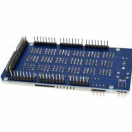

Плата расширения Mega Sensor Shield V2.0

В избранное К сравнению
Шилд для Ардуино Mega 2560 и Mega 1280
подробнее
Артикул: SensorShield-V2
Магазин Жулебино: В наличии
Интернет магазин: В наличии
650 ₽
Отзывы (0)
Доставка по Москве и РоссииМы доставим ваш заказ курьером по Москве или службой экспресс-доставки по всей России.
Пункт самовывозаг. Москва, Жулебинский бульвар, д. 36, корп. 1
Плата расширения Mega Sensor Shield V1.1730 ₽
Описание
Коммутационная плата Mega Sensor Shield V2.0 предназначена для расширения функциональности контроллеров на платформе Arduino Mega.
Плата позволяет облегчить подключение к контроллеру Arduino MEGA большого количества простых периферийных устройств. Это удобно в проектах с использованием множества датчиков, светодиодов, кнопок, двигателей, реле.
- На плате предусмотрена кнопка сброса или перезагрузки RESET.
- Есть индикатор включения питания подписанный PWR.
- Контактные площадки Mega Sensor Shield V2.0 совместимы с Arduino Mega 2560 и Mega 1280.
Питание платы осуществляется или с Arduino, или от внешних источников питания (блоков питания, батарей). Переключение с источника питания Arduino на внешний источник осуществляется с помощью перемычки SEL_PWR. Для питания платы нужно напряжение 5 Вольт.
Характеристики платы Mega Sensor Shield V2.0:
Напряжение питания: 5 В
Питание: от Arduino или внешних источников питания
SD card interface - интерфейс для подключения карт памяти SD
Ultrasonic interface - интерфейс для подключения ультразвуковых датчиков
I2C (IIC) port (Inter-Integrated Circuit) – последовательная шина данных для связи интегральных схем
ICSP интерфейс - внутрисхемное программирование
Интерфейс RS232 - последовательная шина COM
ACP220 wireless module interface - интерфейс для подключения внешнего Wi-Fi модуля ACP220
Bluetooth interface - коммуникационный интерфейс
Габариты платы: 100 х 55 х 20 мм
вес: 43 г.